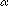
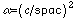

Propagation is done using the Manolopoulos's extension [D. E. Manolopoulos,
J. Chem. Phys.,
85, 6425 (1986)] of the original log-derivative propagator
of Johnson. Typically SPAC should be on the order
of 0.1 - 0.25 times the deBroglie wavelength for the system, which can be determined by the
command DEBROGLI The
sector width SPAC scales as the square root of the collision
energy.
In bound-state calculations (flag
BOUNDC = .true.),
SPAC is the
spacing between the equally distributed Gaussian basis
 .
.
The scale factor  is determined
by means of the additional parameter C as follows:

Go to:
Commands | Flags | Bound states | A sample bound state calculation | Hibridon Help